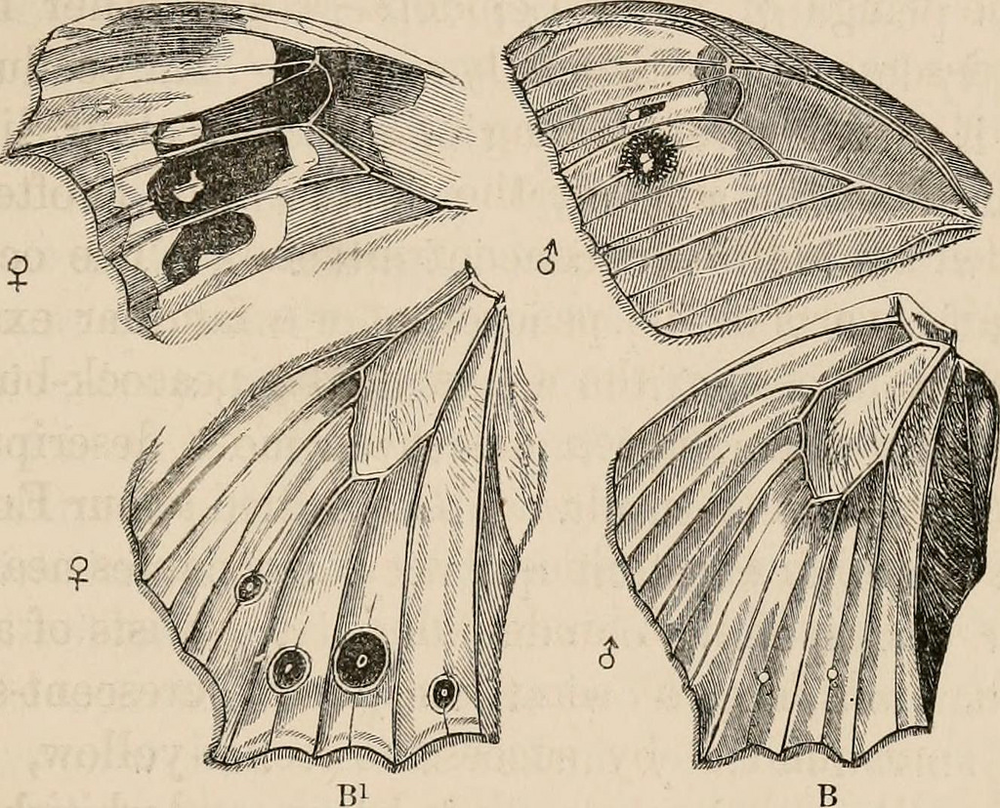

Low or no cost distributed evolutionary computation
JJ Merelo
Potlatch is a resource redistribution system
== load balancing!
But also creates a link between persons and tribes
== distributed system!
Where's my gift?
I want my free distributed computing system!
Potlatch arose from big resource surpluses
You only give what you've got to spare
Where's my free computing resources?
In your pockets!
Wait. Evolutionary algorithms? What's that?
Evolving solutions through natural selection

Select the best, combine and change them, repeat until solution found
From The descent of man by Darwin